De la fotografía al patrón, punto a punto.
Al abrir Wooly Wonder verás tres zonas principales:
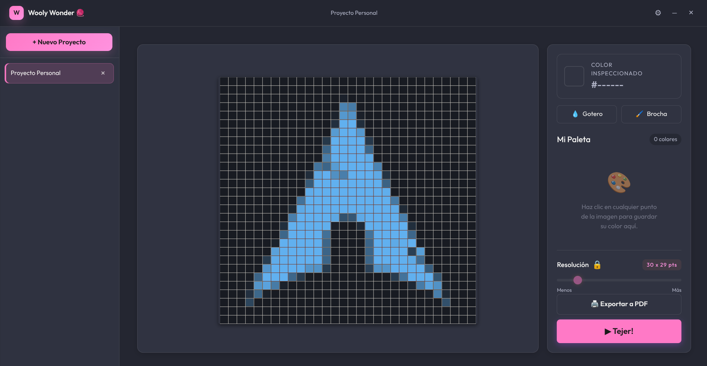
Vista general: proyectos, editor central y paleta.
Si es tu primera vez, no habrá proyectos: crea uno para empezar.
Un proyecto guarda una o varias imágenes con sus patrones, paletas y progreso.
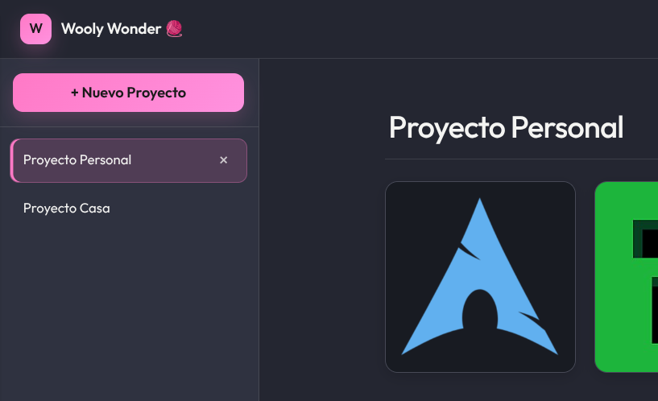
La barra lateral lista tus proyectos; la galería, sus imágenes.
Dentro de un proyecto puedes añadir imágenes de tres formas:
Con Ctrl + V: si no hay proyectos, se crea uno; si tienes varios, la app pregunta dónde guardar.
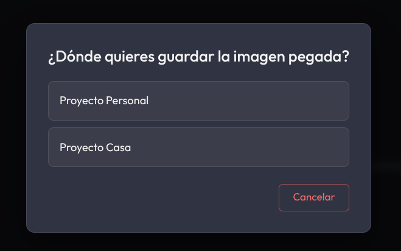
Con varios proyectos, eliges dónde guardar la imagen pegada.
Al abrir una imagen entras en el editor. La foto se pixela en una cuadrícula donde cada cuadrito es un punto de tu tejido.
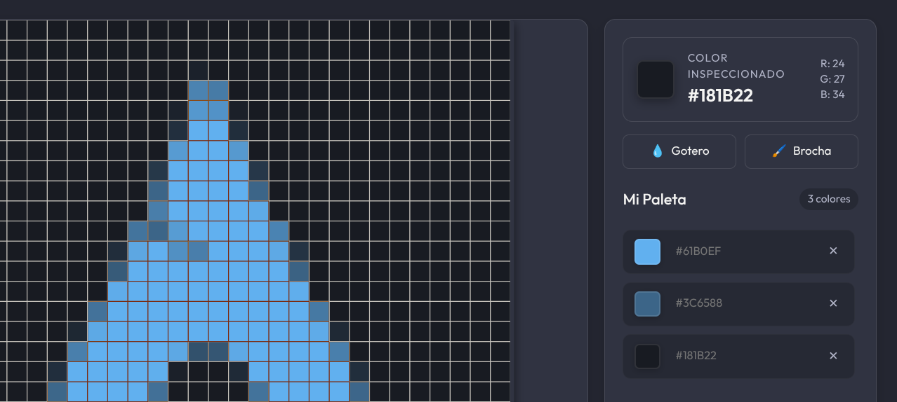
Lienzo a la izquierda; inspector de color y paleta a la derecha.
La cuadrícula es inteligente: sus líneas y números cambian de color para contrastar siempre con la foto, así nunca fuerzas la vista al contar.
El control Resolución decide cuántos cuadritos tendrá tu patrón:
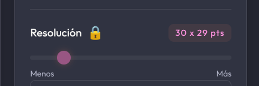
Slider, dimensiones (ej. 30 x 29 pts) y candado 🔓/🔒.
Pulsa el candado 🔒 para bloquear la resolución y no cambiarla por accidente.
Al hacer zoom, aparece el botón ✂️ Recortar arriba a la derecha del lienzo. La imagen se reemplaza por el área visible.
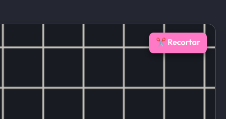
El botón ✂️ Recortar aparece al ampliar la imagen.
La paleta es tu lista de colores de lana o hilo a comprar.
Dos herramientas para editar el patrón a mano:
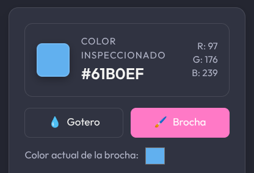
Gotero, Brocha y el selector de color de la brocha.
💧 Gotero: haz clic en un cuadrito para copiar su color a la brocha.
🖌️ Brocha: pinta cuadritos con el color elegido. Clic (o arrastra) para pintar.
La herramienta estrella para seguir tu patrón fila por fila. Pulsa ▶ Tejer! y elige desde dónde empezar:
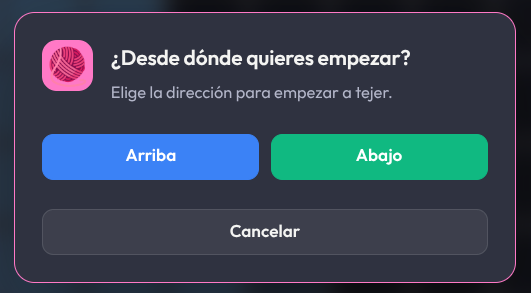
Empieza por Arriba o por Abajo del patrón.
Al elegir, entras en Modo Concentración: se ocultan los menús y solo se resalta la fila actual. Sal con ⏹ Salir o la tecla Esc.
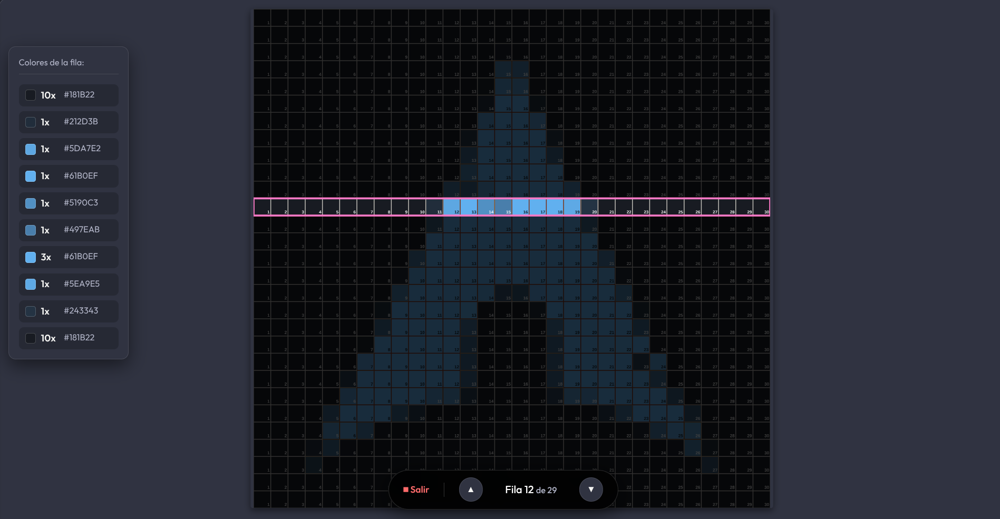
Fila actual resaltada, resto atenuado y columnas numeradas.
PANEL "COLORES DE LA FILA"
Muestra la secuencia de la fila (ej. 12x Lana Roja = teje 12 puntos rojos seguidos).
Pulsa 🖨️ Exportar a PDF para generar un documento imprimible de dos páginas:
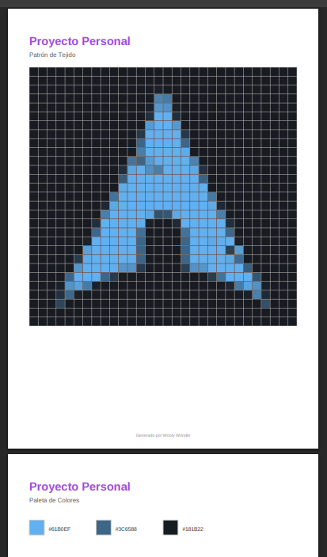
El PDF incluye patrón y, en otra página, la paleta.
Abre Ajustes (⚙) en la cabecera.
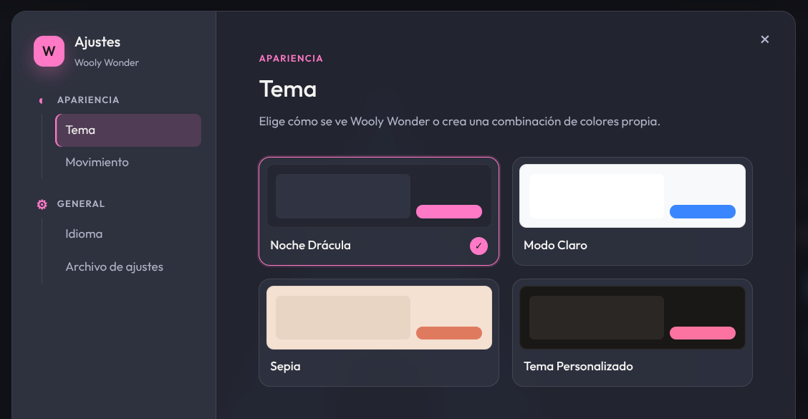
Elige tema: Noche Drácula, Modo Claro, Sepia o personalizado.
Wooly Wonder guarda todo automáticamente: proyectos, imágenes, paletas, nombres, nivel de detalle, píxeles pintados y tu progreso del Modo Tejer. No hay botón "Guardar".
| Pegar una imagen | Ctrl+V |
| Deshacer (Brocha) | Ctrl+Z |
| Rehacer (Brocha) | Ctrl+Shift+Z |
| Salir del Modo Tejer | Esc |
| Zoom sobre la imagen | Rueda ratón |
| Mover la imagen | Rueda + arrastrar |
| Guardar un color | Clic izquierdo |
¿SE BORRAN MIS PROYECTOS AL CERRAR?
No. Todo se guarda automáticamente y estará intacto la próxima vez.
NO VEO BIEN LA CUADRÍCULA EN FOTOS OSCURAS
La cuadrícula y los números ajustan su color solos para contrastar siempre.
PINTÉ Y AL MOVER LA RESOLUCIÓN SE BORRÓ
Es normal: la cuadrícula se recalcula. Fija la resolución (candado 🔒) y pinta después.
¿VARIAS IMÁGENES EN UN PROYECTO?
Sí, cada una guarda su propio patrón, paleta y progreso.